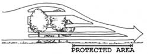

ENERGY TIPS
Proper landscaping can reduce home utility bills by as much as 30 percent.
The United States has 42 million acres of yard (an area about the size of New England). Most of these yards waste water, are sprayed with chemicals, don't use native plants, and can't support wildlife. Only a small percentage take advantage of their natural ability to shield a house from the elements. According to the U.S. Department of Energy, a recent U.S. Forest Service report, and numerous university studies, landscaping can substantially reduce a home's utility bills. By how much? Between $300 and $750 a year according to those same studies, and that doesn't even include the increased value that low utility bills and a well-designed landscape add to home resale prices (15% according to a survey by the National Gardening Association).
The strategy for handling the sun is simple: block it when it's hot, let it in when it's cold. What's more complicated is where to place and not place plantings to achieve those goals. In many cases, removing trees can be even more important than planting them.
As landscape writer Robert Kourik noted, "The old-fashioned idea that an energy-conserving landscape means a thicket of deciduous trees along the southern side of a house [so the leaves will block the sun in the summer, but drop off and let the sun in during the winter] is not only ineffective, but often counterproductive." For most of the country, heating costs more than cooling, so a home's southern exposure should usually be cleared to let in the sun's warmth. Even leafless deciduous trees can block 25-60% of the sun's energy.
Tall shade trees should be placed on the eastern and western sides of the house. Because the summer sun rises high in the sky, it's the roof and the eastern and western walls that get direct heat and thus need the most protection. If you don't have established plants to the east and west, put fast-growing deciduous vines on a trellis along a wall. This will give almost immediate cooling benefits while you wait for larger, slower-growing trees to mature.
To determine where to plant eastern and western shade trees for the most effective sun control, you need to know the path of the sun at your home's location. Charts from the local library will give "your" sun's position in the sky for different seasons and times of day. By knowing the sun's position, you know exactly where to place your plants to maximize summer cooling without interfering with needed winter warmth.
In Columbus, Ohio, for example, the midday summer sun is 73 degrees high in the sky. From the southwestern to the southeastern corner of a Columbus home, trees should be planted along a line that veers off at a 73-degree angle of due south. The fan-shaped area facing south in between those "lines" should be free of large shade-producing trees. This will ensure maximum warmth during the winter while blocking the hottest summer sun. If you do need to plant trees or shrubs to the south and don't want to block the sun, knowing the winter sun's position tells you how far from the house you need to plant.
In the hottest parts of the country, such as southern Florida, it's ideal to have high-canopied palm trees near the south of your house. These will let in some winter sun while providing year-round protection from the hot midday sun. Planting deciduous vines on "eyebrow" trellises attached to the underside of southern and western eaves can block the sun during the hottest parts of the year without eliminating winter warmth. In hot, humid areas, plant placement and species choice are critical when planting close to your home - otherwise you could create excessive moisture.
One quick, cooling energy saver that even the laziest gardener shouldn't overlook is shading the air conditioner. Shading can immediately increase its performance by 10%.
Wind has a powerful cooling effect. Heat loss from a building's surface increases proportionally to the square of the wind's speed (i.e., if wind speed doubles, heat loss quadruples), as anyone who has experienced the windchill effect knows.
A solid barrier isn't the most effective wind block; a penetrable windbreak will actually create a larger wind shadow. A windbreak - which should be planted perpendicular to the prevailing winds - can reduce wind speed for a distance up to 15 times the height of the barrier. The maximum protection downwind from a barrier is found within 5 times the height of the barrier. A 25-foot-high windbreak, for example, should be placed within 125 feet of your house.
Dense, coniferous evergreens make good windbreaks for cold climates because they branch to the ground and provide effective wind control year-round. A spruce wind barrier can cut wind velocity by 80%, slowing a 12-mph wind to 3 mph. Taking into account the windchill effect on a 20°F day, that means the difference between what feels like below-zero temperatures and an almost imperceptible cooling breeze (similar to the breeze generated by walking).
Since windbreaks block airflow, wind speed increases through openings and at its outside edges (just like dammed water picks up speed at an opening). Wind breaks should extend 50 feet wider than the area you are shielding (if this isn't possible, move the windbreak closer to the house and extend it as much as you can).
If you're planting a new windbreak, use a fence for immediate wind protection and plant fast-growing trees and shrubs along with your ideal windbreak trees. Be prepared to lose a few fast-growing trees to the wind and to take them away when they hinder your maturing, ideal windbreak trees. A windbreak fence should be louvered to increase the length of its wind shadow.
The increased wind speed created by openings in windbreaks can be used to your advantage in hot climates and during the summer in temperate and cool climates. (This assumes that the prevailing summer winds come from a different direction than the winter ones. If they come from the same direction, choose your wind strategy by the size of your utility bills: Does it cost more to heat or cool your house?) A funnel of trees or tall hedges that guide winds into your house can provide constant natural air-conditioning. The plants act like a large wind scoop that can turn even light, unnoticeable prevailing winds into cooling breezes. If the narrowest end of the funnel is covered by a breezeway or a tree with a high canopy, the cooling effect is even better.
There's more to making a property earth friendly than simply making it energy efficient, but it's not a bad start. If most American home owners made a few key landscaping changes, the collective energy savings would be the equivalent of closing 23 large power plants or taking more than 26 million cars off the road.
Marshall's book, Energy-Efficient and Environmental Landscaping , is available from Appropriate Solution Press, 802-348-7441, for $17.95 + $2 postage.
|
Despite what you may think, a solid wind barrier is not the most effective way to shield an area. |
A penetrable barrier will create a substantially larger wind shadow. |
 Evergreens provide the best protection from winter wind, while deciduous trees can funnel a summer breeze. |
|
|
|
|